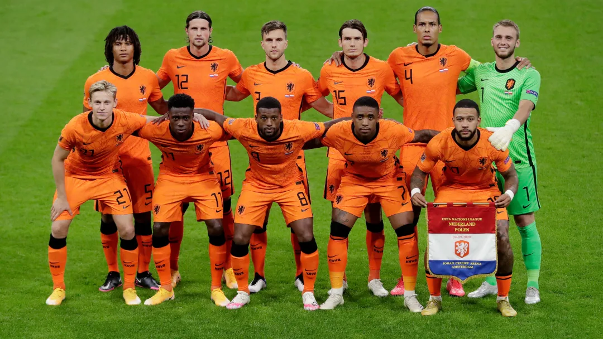
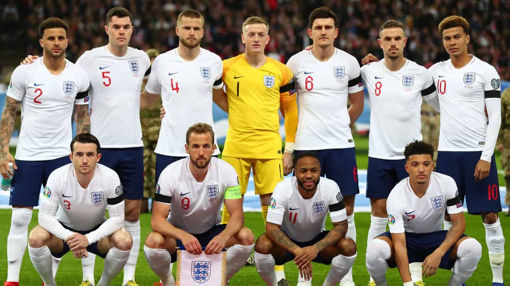
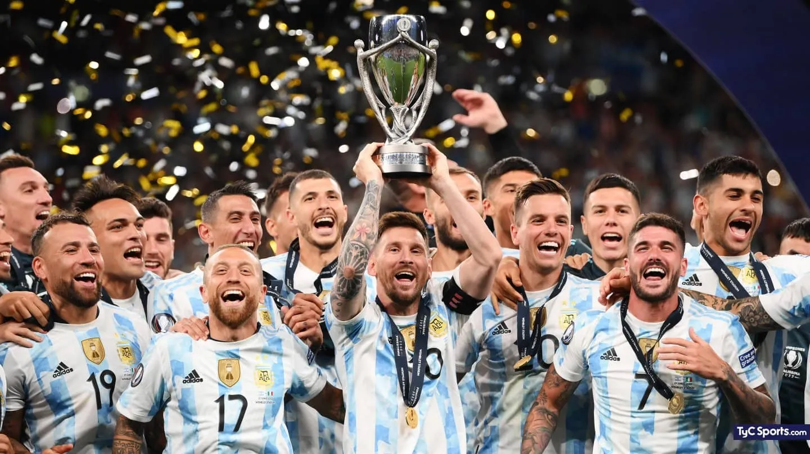
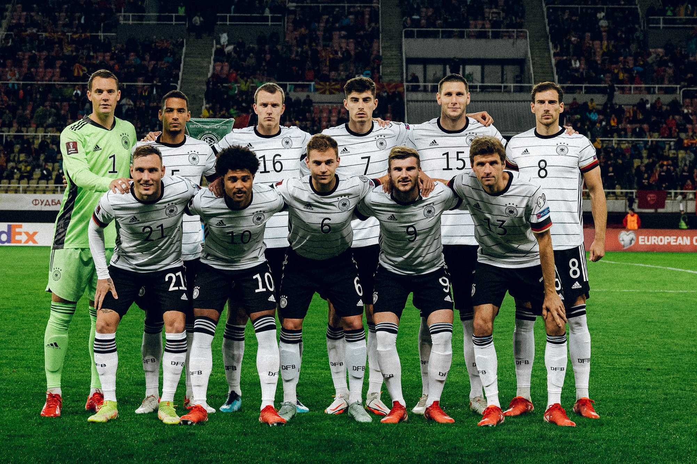

Grupo A
Ecuador
Informacion
- Participaciones previas: 3.
- Mejor resultado: 12° (2006).
- Mejores jugadores: Pervis Estupiñán y Michael Estrada.
- Entrenador: Gustavo Alfaro.
- Ecuador se aseguró un lugar entre los cuatro primeros de las Eliminatorias Sudamericanas. Actualmente se encuentra en el ranking 44° de selecciones de la FIFA (su mejor clasificacion fue el 10mo puesto).
Países Bajos
Informacion
- Participaciones previas: 10.
- Mejor resultado: Subcampeon (3 veces).
- Mejores jugadores: Memphis Depay y Virgil van Dijk
- Entrenador: Louis van Gaal.
- Paises bajos llega a Qatar arrasando el grupo G de las Eliminatorias europeas. Actualmente se encuentra en el ranking 8° de selecciones de la FIFA (su mejor clasificacion fue el 1er puesto).
Qatar
Informacion
- Participaciones previas: Será su debut.
- Mejor resultado: -
- Mejores jugadores: Almoez Ali y Akram Afif.
- Entrenador: Félix Sánchez.
- Qatar se clasifico al mundial por ser el anfitrión del evento. Actualmente se encuentra en el ranking 48° de selecciones de la FIFA (su mejor flasificacion fue el puesto 44).
Senegal
Informacion
- Participaciones previas: 2.
- Mejor resultado: 7° (2002).
- Mejores jugadores: Sadio Mané y Edouard Mendy.
- Entrenador: Aliou Cissé.
- Senegal se clasifico al mundial derrotando en la llave decisiva a Egipto tras empatar 1-1 en el resultado global e imponerse 3-1 en la definición por penales. Actualmente se encuentra en el ranking 18° de selecciones de la FIFA siendo esta la mejor clasificacion de su historia.

Grupo B

USA
Informacion
- Participaciones previas: 10.
- Mejor resultado: 3° (1930).
- Mejores jugadores: Christian Pulisic y Sergino Dest.
- Entrenador: Gregg Berhalter.
- Estados unidos se clasifico como 3° del octogonal final de las Eliminatorias de la Concacaf. Actualmente se encuentra en el ranking 14° de selecciones de la FIFA (su mejor clasificacion fue el 4to puesto).
Gales
Informacion
- Participaciones previas: 1.
- Mejor resultado: 5° (1958).
- Mejores jugadores: Gareth Bale y Daniel James.
- Entrenador: Robert Page.
- Gales se clasifico en el repechaje europeo, tras vencer a Austria (2-1) y derrotar 1-0 a Ucrania. Actualmente se encuentra en el ranking 19° de selecciones de la FIFA (su mejor clasificacion fue el 8vo puesto).
Irán
Informacion
- Participaciones previas: 5.
- Mejor resultado: 14° (1978).
- Mejores jugadores: M. Taremi y S. Azmoun.
- Entrenador: Carlos Queiroz.
- Iran se clasifico entre los dos primeros del Grupo A de las Eliminatorias Asiáticas. Actualmente se encuentra en el ranking 22° de selecciones de la FIFA (su mejor clasificacion fue el puesto numero 15).
Inglaterra
Informacion
- Participaciones previas: 15.
- Mejor resultado: Campeón (1966).
- Mejores jugadores: Harry Kane y Raheem Sterling.
- Entrenador: Gareth Southgate.
- Inglaterra se clasifico ganando el Grupo I de las Eliminatorias Europeas. Actualmente se encuentra en el ranking 5° de selecciones de la FIFA (su mejor clasificacion fue el 3er puesto).
Grupo C
Argentina
Informacion
- Participaciones previas: 17.
- Mejor resultado: Campeón (2 veces).
- Mejores jugadores: Lionel Messi y Angel Di Maria.
- Entrenador: Lionel Scaloni.
- Argentina se clasifico al mundial saliendo 2do puesto de las Eliminatorias sudamericanas. Actualmente se encuentra en el ranking 3° de selecciones de la FIFA (su mejor clasificacion fue el 1er puesto).
Arabia Saudita
Informacion
- Participaciones: 5.
- Mejor resultado: 12° (1994).
- Mejores jugadores: Saleh Al-Shehri y Salem Al-Dawsari.
- Entrenador: Hervé Renard.
- Arabia Saudita se clasifico ganando el Grupo B de las Eliminatorias asiáticas. Actualmente se encuentra en el ranking 53° de selecciones de la FIFA (su mejor clasificacion fue el puesto numero 21).
México
Informacion
- Participaciones: 16.
- Mejor resultado: 6° (2 veces).
- Mejores jugadores: Hirving Lozano y Guillermo Ochoa.
- Entrenador: Gerardo Martino.
- Mexico se clasifico al mundial como 2° del octogonal final de las Eliminatorias de la Concacaf. Actualmente se encuentra en el ranking 12° de selecciones de la FIFA (su mejor clasificacion fue el 4to puesto).
Polonia
Informacion
- Participaciones: 8.
- Mejor resultado: 3° (2 veces).
- Mejores jugadores: Robert Lewandowski y Wojciech Szczesny.
- Entrenador: Czeslaw Michniewicz.
- Polonia se clasifico al mundial derrotando por 2-0 a Suecia en la definición de una de las repescas europeas. Actualmente se encuentra en el ranking 26° de selecciones de la FIFA (su mejor clasificacion fue el 4to puesto).

Grupo D

Australia
Informacion
- Participaciones: 5.
- Mejor resultado: 16° (2006).
- Mejores jugadores: Ajdin Hrustic y Jamie Maclaren.
- Entrenador: Graham Arnold.
- Australia se clasifico al mundial ganandole el Repechaje intercontinental a Perú. Actualmente se encuentra en el ranking 39° de selecciones de la FIFA (su mejor clasificacion fue el puesto numero 14).
Dinamarca
Informacion
- Participaciones: 5.
- Mejor resultado: 8° (1998).
- Mejores jugadores: Kasper Schmeichel y Christian Eriksen.
- Entrenador: Kasper Hjulmand.
- Dinamarca se clasifico al mundial ganando el Grupo F de las Eliminatorias europeas. Actualmente se encuentra en el ranking 10° de selecciones de la FIFA (su mejor clasificacion fue el 3er puesto).
Francia
Informacion
- Participaciones: 15.
- Mejor resultado: Campeón (2 veces).
- Mejores jugadores: Kylian Mbappé y Karim Benzema.
- Entrenador: Didier Deschamps.
- Francia se clasifico al mundial ganando el Grupo D de las Eliminatorias Europeas. Actualmente se encuentra en el ranking 4° de selecciones de la FIFA (su mejor clasificacion fue el 1er puesto).
Túnez
Informacion
- Participaciones: 5.
- Mejor resultado: 9° (1978).
- Mejores jugadores: Wahbi Khazri y A. Maaloul.
- Entrenador: Jalel Kadri.
- Tunez se clasifico al mundial venciendo en la llave decisiva a Malí por 1-0 en el resultado global. Actualmente se encuentra en el ranking 30° de selecciones de la FIFA (su mejor clasificacionfue el puesto numero 14°).
Grupo E
Alemania
Informacion
- Participaciones: 19.
- Mejor resultado: Campeón (4 veces).
- Mejores jugadores: Joshua Kimmich y Manuel Neuer.
- Entrenador: Hansi Flick.
- Alemania se clasifico al mundial ganando el Grupo J de las Eliminatorias europeas. Actualmente se encuentra en el ranking 11° de selecciones de la FIFA (su mejor clasificacion fue el 1er puesto).
Costa Rica
Informacion
- Participaciones: 5.
- Mejor resultado: 8° (2014).
- Mejores jugadores: Keylor Navas y Francisco Calvo.
- Entrenador: Luis Fernando Suárez.
- Costa rica se clasifico al mundial ganandole el Repechaje intercontinental a Nueva Zelanda. Actualmente se encuentra en el ranking 34° de selecciones de la FIFA (su mejor clasificacion fue el puesto numero 13).
España
Informacion
- Participaciones: 15.
- Mejor resultado: Campeón (2010).
- Mejores jugadores: Sergio Busquets y Pedri.
- Entrenador: Luis Enrique.
- España se clasifico al mundial ganando el Grupo B de las Eliminatorias europeas. Actualmnete se encuentra en el ranking 6° de selecciones de la FIFA (su mejor clasificacion fue el 1er puesto).
Japón
Informacion
- Participaciones: 6.
- Mejor resultado: 9° (2 veces).
- Mejores jugadores: Takumi Minamino y Yuya Osak.
- Entrenador: Hajime Moriyasu.
- Japon se clasifico al mundial asegurandose ser uno de los dos primeros del grupo B de las Eliminatorias asiáticas. Actualmente se encuentra en el ranking 24° de selecciones de la FIFA (su mejor clasificacion fue el puesto numero 9).

Grupo F

Bélgica
Informacion
- Participaciones: 13.
- Mejor resultado: 3° (2018).
- Mejores jugadores: Kevin De Bruyne y Romelu Lukaku.
- Entrenador: Roberto Martínez.
- Belgica se clasifico al mundial ganando el grupo E de las Eliminatorias europeas. Actualmente se encuentra en el ranking 2° de selecciones de la FIFA (su mejor clasificacion fue el 1er puesto).
Canadá
Informacion
- Participaciones: 1.
- Mejor resultado: 24° (1986).
- Mejores jugadores: Alphonso Davies y Cyle Larin.
- Entrenador: John Herdman.
- Canada se clasifico al mundial asegurandose un lugar entre los tres primeros del Octagonal Final de las Eliminatorias Concacaf. Actualmente se encuentra en el ranking 43° de selecciones de la FIFA (su mejor clasificacion fue el puesto numero 40).
Croacia
Informacion
- Participaciones: 5.
- Mejor resultado: 2° (2018).
- Mejores jugadores: Luka Modric y Ivan Perisic.
- Entrenador: Zlatko Dalic.
- Croacia se clasifico al mundial ganando el Grupo H de las Eliminatorias Europeas. Actualmente se encuentra en el ranking 15° de selecciones de la FIFA (su mejor clasificacion fue el 3er puesto).
Marruecos
Informacion
- Participaciones: 5.
- Mejor resultado: 11° (1986).
- Mejores jugadores: Achraf Hakimi y Ayoub El Kaabi.
- Entrenador: Walid Regragui.
- Marruecos se clasifico al mundial venciendo en la llave decisiva a la República Democrática del Congo por 5-2 en el resultado global. Actualmente se encuentra en el ranking 23° de selecciones de la FIFA (su mejor clasificacion fue el puesto numero 10).